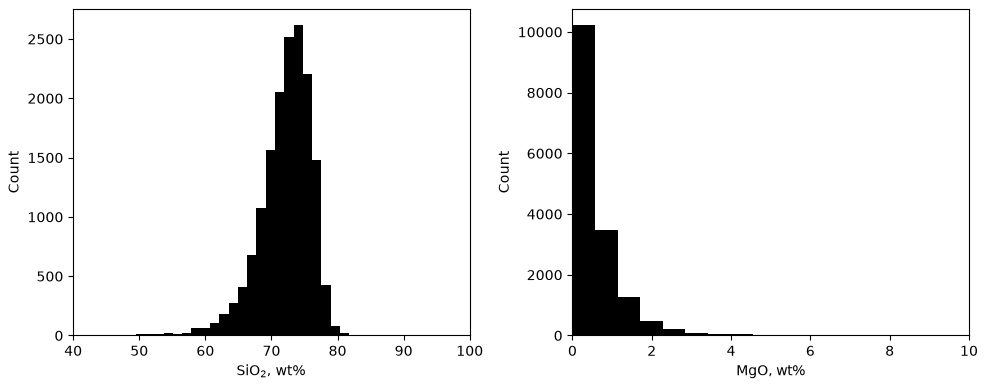
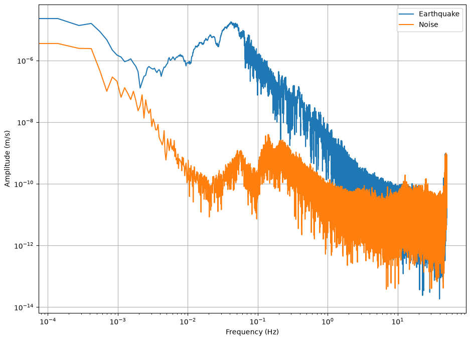
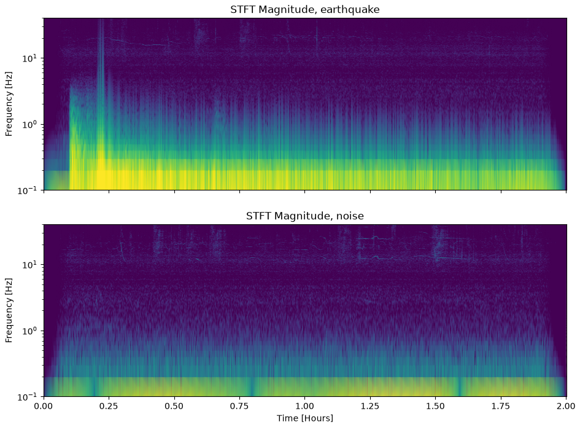

Session 7 · Wed Oct 14 · Book sections 2.7–2.8
📈
Before any model touches your data:
What shape is your data — and where does its energy live?
📖 The algorithm behind every spectrum in this course: the fast Fourier transform.
Cooley, J. W. & Tukey, J. W. (1965). An algorithm for the machine calculation of complex Fourier series. Mathematics of Computation, 19, 297–301.
✓ The playbook: what each taper buys you, and what spectral leakage costs when you skip it.
Harris, F. J. (1978). On the use of windows for harmonic analysis with the discrete Fourier transform. Proceedings of the IEEE, 66(1), 51–83.
✓ The right estimator for the right distribution: the b-value formula notebook 2.7 uses.
Aki, K. (1965). Maximum likelihood estimate of b in the formula log N = a − bM and its confidence limits. Bulletin of the Earthquake Research Institute, 43, 237–239.
✗ A decade of earthquake forecasts undone once the statistics were tested against the data.
Kagan, Y. Y. & Jackson, D. D. (1991). Seismic gap hypothesis: Ten years after. Journal of Geophysical Research, 96(B13), 21419–21431.
Two tools from the 1960s–70s and two statistics lessons — all four still load-bearing today.
Name the distribution before you compute a mean — the mean of a power law can be meaningless.

Kurtosis of SiO₂: 13.67 by the moment integral, 10.67 from pandas — same data, two conventions (plain vs excess), difference exactly 3. Record which one your pipeline uses.
15,924 granite analyses, EarthChem database. SiO₂ piles up near 73 wt% with a long left tail; MgO decays like an exponential. Two variables, one dataset, two different shapes.
b = 0.998 maximum likelihood, 20,000 synthetic magnitudes — true value 1.0
Gutenberg-Richter: log₁₀ N(≥M) = a − bM. Synthetic catalog (mlgeo_synth), magnitudes 1.0–5.64, so the truth is known and the estimator can be graded.
Because we planted b = 1.0, we can certify the estimator before trusting it on a real catalog.

Station UW.RATT (Washington), M8.2 Chignik, Alaska earthquake, 2021-07-29 vs the two hours of noise before it. The earthquake wins by 2–3 decades from 0.01–1 Hz; the curves merge near 5–10 Hz — that band choice is Friday’s lecture.
Spectral leakage (signal processing) ≠ data leakage (model evaluation, 2.13). Unrelated concepts that share a word — the glossary keeps them apart.
Detrend, taper, then transform — the standard chain before every spectrum in this course.
11.2 vs 2.8 kurtosis of the log-amplitude spectrum: earthquake vs noise
Their means barely differ: −4.77 vs −4.87. The tails discriminate; the average does not.
2.7’s moments applied to 2.8’s spectra = a discriminating feature. This is feature engineering, one week early.

Short-time Fourier transform, earthquake (top) vs noise (bottom), UW.RATT (real). The P arrival is a brief high-frequency streak; the surface waves ring below 0.3 Hz for the rest of the two hours.
| Lens | The question it answers | Geoscience example |
|---|---|---|
| Histogram + moments | What values, how often, how heavy the tails? | granite SiO₂; flood discharge |
| Named distribution | Which statistics are even legitimate? | Gutenberg-Richter b-value |
| Spectrum (+ taper) | Where does the energy live? Where does signal beat noise? | picking the 1–10 Hz band at RATT |
| Spectrogram | When does each frequency band turn on? | P wave vs hours of surface waves |
Look at the data both ways before modeling — every later chapter assumes you did.
pixi run jupyter lab → 2.7_statistical_considerations.ipynb2.8_data_spectral_transforms.ipynb: recompute the RATT spectra with and without the taper; describe the differenceFriday: repairing real records (2.9) — filters meet gaps and clock errors · HW1 was due Mon · Ch 1 quiz closed last week
ESS 469/569 · Machine Learning in the Geosciences · Autumn 2026